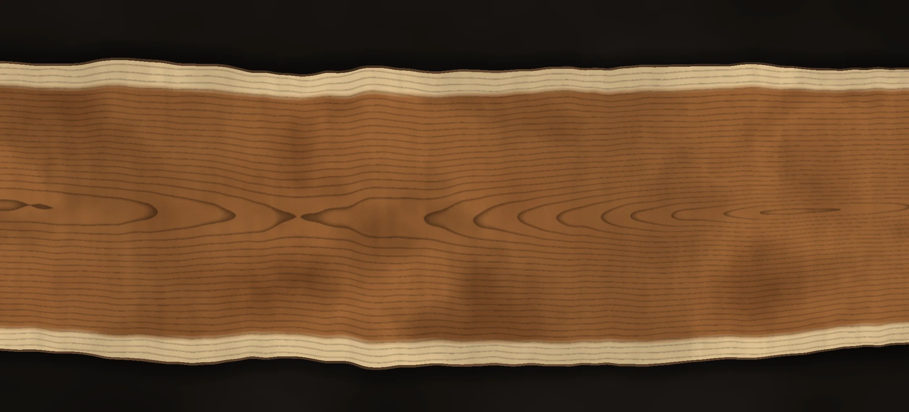
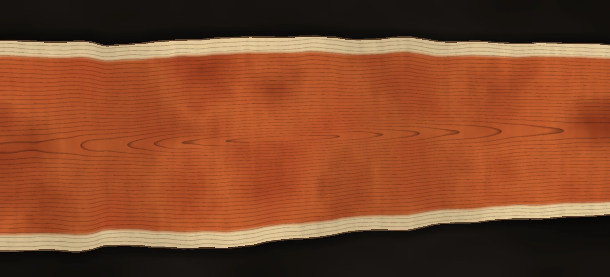
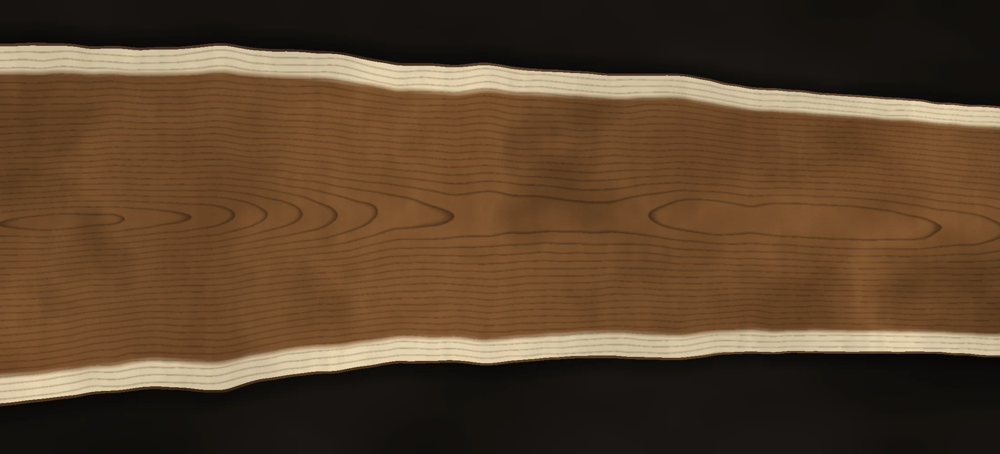
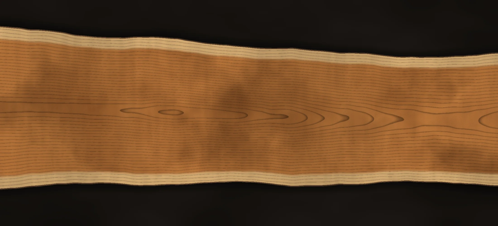
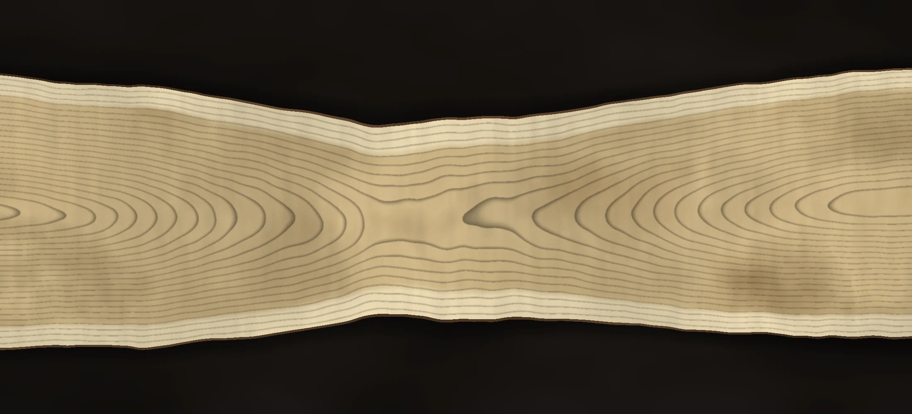

Mill your tree
Storm-downed, removed or already felled: we mill it where it lies into slabs, beams or lumber you keep. A tree that would have been chipped becomes a table your grandchildren eat at.
Aloha Slabworx · Kauaʻi
A portable 86-inch Alaskan sawmill for the giants. Island hardwoods milled where they fall, dried right, and turned into heirloom slabs.

01 — The mill
An Alaskan mill is two clamps and two rails that turn a chainsaw into a sawmill you can carry. Ours started as a 48-inch frame and was lengthened and reinforced into an 86-inch rig, with stiffened rails on rollers, a ripping chain and an auxiliary oiler, driven by a Stihl MS 881.
That means a log too big for any truck never has to move. We set up where the tree lies, mill it into slabs on the spot, and leave your yard the way we found it.
02 — Services
Storm-downed, removed or already felled: we mill it where it lies into slabs, beams or lumber you keep. A tree that would have been chipped becomes a table your grandchildren eat at.
Air-dried under cover, finished in our solar kiln, tagged with species, origin and moisture history. Come walk the stacks and pick the one that stops you.
Dining tables, counters, benches and live-edge everything, flattened, stabilised and finished to glass by Precision Solutions.
Makers, slab yards and designers on the mainland: ask about crated pieces and container loads, dry, graded and photographed, with a packing list per slab.
03 — Process
Seven steps, done the same way every time.
Written agreement with the owner. Species identified while leaves, pods and bark are still there. A tree record (owner, place, date, photos) is the slab's proof of legal origin.
2″, 4″ and 6″ slabs, cut oversize and kept in order so book-matched pairs stay together.
Ends sealed, ID marked, tag nailed, photographed, sample slabs weighed. The first hour decides how many checks you'll fight later.
Stacked level on stickers every 16″, weighted, under a roof with open sides. About six months for 2″ slabs; thick slabs take a year or more.
Finished to 7–9% moisture, equalised, conditioned and heat-treated (133°F at the core for 30 minutes).
The best slabs are flattened and sealed; voids stabilised; edges kept alive.
Graded, measured, photographed and priced, then delivered on-island or crated for the mainland.
04 — Woods
What's in the yard depends on which giants come down. Every tree is identified before it's sold, by leaf, pod, end grain, density and, for the rosewoods, UV light.
The giant of the yard. Wide, light for its size, warm brown heartwood with pale sapwood edges. Our first log measured 66 inches across.

Golden to blood-red heartwood that glows under UV. Often sold as rosewood; we tell you exactly which it is.

Hawaiʻi's classic table wood: chocolate heartwood, cream sapwood, wild figure.

The islands' treasure, with deep curl and chatoyance. Rare, and only when the right tree comes down.

Pale and lively, often spalted with ink lines. Beautiful for counters and smaller tables.
Slab images above are studies of each species' character; see the yard for the real thing.
05 — The yard
Every slab is tagged and logged: species, origin, size, moisture history. Ask about any one by its number.
06 — Questions
The 86-inch frame takes logs well over five feet in diameter. If it's bigger than that, send a photo anyway; there's usually a way.
All over Kauaʻi. For the other islands, call and we'll talk logistics.
We mill trees that are already down: storm-felled, removed, or felled by your arborist. We work with the owner and a licensed arborist where one is needed.
Yes. Many people do: their tree becomes their table. We can also dry them in our yard and kiln, or buy the log from you.
About six months under cover for 2-inch slabs, then the kiln. Thick slabs take a year or more. Wet wood moves; we don't rush it.
Milling is quoted per job from a photo and the log's size; yard slabs are priced per slab by species, grade and size. Call or text for a number.
Call or text
Text a photo of the tree with something for scale. We'll tell you what's inside it.
808 647 9523